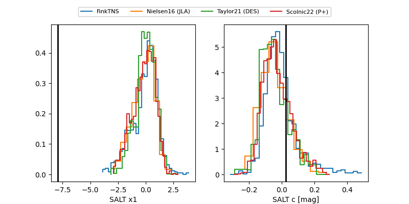

2025agqz
Target 2025agqz at 2025-12-31 18:00
Aliases and brokers:
FINK: link
Lasair: link
ALeRCE: link
TNS: link
YSE: link
alt names
ZTF25ackuhke (ztf)
ZTF18aaswbai (fink_ztf)
2025agqz (tns,yse)
Coordinates:
equatorial (ra, dec) = 204.2159,+23.13204
equatorial (HMS+DMS) = 13:36:51.80,+23:07:55.34
galactic (l, b) = (14.1784,+78.97530)
Flags:
Photometry:
no photometry available
Lightcurve

Visibility


Additional plots
